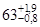
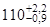
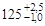
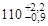

ВЕДОМСТВЕННЫЕ СТРОИТЕЛЬНЫЕ НОРМЫ
ИНСТРУКЦИЯ
ПО ПРОЕКТИРОВАНИЮ И МОНТАЖУ КАНАЛОВ СВЯЗИ ИЗ ПЛАСТМАССОВЫХ ГОФРИРОВАННЫХ
ТРУБ
ОРДЕНА ЛЕНИНА ПРОЕКТНО-СТРОИТЕЛЬНОЕ ОБЪЕДИНЕНИЕ
|
Московский строительный комитет при Мосгорисполкоме ПСО Мосстрой Техническое управление |
Ведомственные строительные нормы |
ВСН 238-88 |
|
Инструкция по проектированию и монтажу каналов связи из пластмассовых гофрированных труб |
1.1. Настоящая Инструкция для опытного строительства распространяется на работы по подземной прокладке до восьми внутриквартальных каналов связи не более двух рядов.
Примечание. Допускается устройство каналов связи из пластмассовых гофрированных труб в многорядной укладке над каналом связи из асбестоцементных труб.
1.3. Для прокладки каналов связи в Москве должны использоваться трубы гофрированные из полиэтилена низкого давления (ПГТ). как правило, диаметром 110 мм, типа П, ТУ 6-19-224-83 (без водоприемных отверстий). Сортамент труб (выборочно) представлен в табл. 1, соединение пластмассовых гофрированных труб посредством муфты и резинового кольца показано на рисунке.
Примечание. Для устройства вводов каналов связи в здания допускается использовать ПГТ диаметром 63 мм типа 1.
1.3. Физико-механические показатели свойств ПГТ приведены в табл. 2.
|
Внесены |
Утверждены Техническим |
Срок введения 01.01.89г. |
1.4. ПГТ поставляются намотанными в бухтах, размеры которых указаны в табл. 3.
Схема соединения пластмассовых гофрированных труб посредством гладкой муфты и резинового кольца
1 - муфта; 2 - кольцо; 3 - труба
Сортамент гофрированных полиэтиленовых труб по ТУ 6-19-224-83 (выборка)
|
Тип труб |
Наружный диаметр (Дп), мм с допуском |
Внутренний диаметр, (Дв), мм |
Толщина стенки (S), мм |
Размеры профиля гофра, мм |
Размеры закругления, мм |
Ориентировочная масса J м, кг |
|
||
|
Шаг (t) |
ширина впадины(n) |
||||||||
|
R |
r |
|
|||||||
|
I |
 |
54 |
0,9 |
11 |
5,0 |
1,5 |
1,0 |
0,22 |
|
|
 |
93 |
0,9 |
19,5 |
6,0 |
2,0 |
2,0 |
0,45 |
|
|
|
 |
106 |
1,0 |
22,0 |
6,0 |
2,5 |
2,0 |
0,56 |
|
|
|
II |
 |
92 |
1,5 |
19,5 |
6,0 |
2,0 |
1,5 |
0,74 |
|
|
|
103 |
1,9 |
22 |
6,0 |
2,5 |
1,5 |
1,05 |
|
|
Показатели свойств гофрированных полиэтиленовых труб
|
№ п/п |
Наименование показателя |
Единица измерения |
Значение показателя |
Примечание |
|
1. |
Плотность |
г/см3 |
0,96 |
ориентировочно |
|
2. |
Относительная деформация поперечного сечения при сжатии образца под нагрузкой для труб типа: I (0,015 МПа) II (0,025 МПа) не более |
% |
5 |
Норма по ТУ 6-19-224-83 |
1.5. При необходимости соединение отрезков ПГТ осуществляется, как правило, с помощью раструбных муфт из полиэтилена или поливинилхлорида и резинового уплотнительного кольца, которое одевается на конец трубы между гофрами (как показано на рисунке). Кольцо сжимается в муфте после сборки на 10-15% от наружного своего диаметра.
Параметры бухт ПГТ
|
Наружный диаметр труб, мм |
Размеры бухты, м |
Длина трубы в бухте, м |
Ориентировочная масса бухты, кг |
|
|
внутренний диаметр |
ширина |
|||
|
63 |
0,8 |
0,4 |
160 |
35,2 |
|
110 |
1,0 |
0,4 |
70 |
31,5х) 51,8 |
|
125 |
1,0 |
0,4 |
60 |
33,6х) 63 |
|
х) В числителе - масса ПГТ типа I, в знаменателе - типа II |
||||
2.1. При проектировании каналов связи из ПГТ или с использованием ПГТ следует соблюдать требования "Общей инструкции по строительству линейных сооружений городских телефонных сетей" и других нормативных документов Минсвязи СССР, а также "Рекомендаций по определению объемов работ и расхода материалов на устройство телефонных и радиотрансляционных вводов" "Моспроект-1" (НМ-80-86), ведомственных строительных норм ВСН 116-87, ВСН 600-81 Министерства связи.
2.2. При проверочном прочностном расчете в грунте каналов из ПГТ диаметром 110 мм их внутренний диаметр не должен быть менее 82 мм.
2.3. При прочностном расчете в грунте ряда ПГТ значения цилиндрической жесткости труб диаметром 110 мм следует принимать на уровне: для типа I - 10,8 Н∙мм, типа II - 11,9 Н∙мм.
2.4. На местности с приемлемым естественным уклоном каналы могут проходить на одинаковом заглублении по всему пролету, за исключением 10-метровых участков, примыкающих к колодцам. В этих местах каналы должны иметь уклон, выводящий на заданную отметку, учитывающую ввод каналов в проемы в стенках колодцев.
2.5. Ввод труб в колодцы, устанавливаемые так, чтобы расстояние от верха их перекрытия до поверхности уличного покрова было 0,2-0,3 м, делают по возможности на одном уровне со стороны входа и выхода, обеспечивая тем самым надлежащие условия для раскладки кабелей в колодцах на будущий их монтаж.
2.6. Расстояние от поверхности уличного покрытия до верхней трубы на вводе в колодец должно быть не менее 0,76 м под пешеходной частью улиц и 0,85 м - под проезжей.
2.7. Колодцы на сети сооружаются на максимальном расстоянии (150 м) друг от друга в местах пересечения улиц, на поворотах и разветвлениях, при изменении количества или профиля каналов по глубине либо в плане.
2.8. При наличии на трассе каких-либо других сооружений допустимо изменять ее прямолинейность путем искривления труб на 0,01 на каждом метре пролета для того, чтобы обойти препятствие.
2.9. Минимально допустимые расстояния между каналами связи из ПГТ и другими подземными коммуникациями следует принимать по табл. 4.
2.10. Глубину заложения каналов связи и ширину траншей при многорядной укладке ПГТ следует принимать по рекомендациям "Моспроект-1", НМ-80-86.
2.11. Ввод каналов связи в здание осуществляют путем непосредственного подвода труб в подвалы через проемы в фундаментах на глубине 0,4-0,5 м от поверхности уличного покрытия с учетом уклона в сторону колодца от здания. Размеры проема зависят от размера вводимого блока труб и толщины стенки здания.
Минимально допустимые расстояния между каналами связи и другими подземными коммуникациями и сооружениями
|
Коммуникации и сооружения |
Минимальное расстояние (м), в плоскости |
|
|
горизонтальной |
вертикальной при пересечении |
|
|
1 |
2 |
3 |
|
Водопровод диаметром < 300 мм |
0,5 |
0,15 |
|
Водопровод диаметром > 300 мм |
1,0 |
0,15 |
|
Канализация |
0,5 |
0,15 |
|
Дренажи и водостоки |
0,5 |
0,15 |
|
Кабели силовые |
0,5 |
0,25-0,15х) |
|
Теплопровод |
1,0 |
0,15 |
|
Газопровод низкого давления 4,9 кПа |
1,0 |
0,15 |
|
Газопровод среднего давления 4,9-294,3 кПа |
1,5 |
0,15 |
|
Газопровод высокого давления 294,3-558,6 кПа |
2,0 |
0,15 |
|
Газопровод высокого давления 558,6-1177,2 кПа |
3,0 |
0,15 |
|
Трамвайные пути, ось ближнего рельса |
2,0 |
1,0 |
|
Мачты и опоры сети наружного освещения, контактные сети и сети связи |
0,5 |
- |
|
Стены и опоры тоннелей и путепроводов (на уровне или ниже основания) |
0,5 |
- |
|
Общие подземные коллекторы |
0,5 |
- |
|
Подошвы насыпей или наружных бровок канала |
1,0 |
- |
|
Отводы деревьев |
1,5 |
- |
|
Бортовые камни |
1,5 |
- |
|
Фундаменты зданий |
0,6 |
- |
|
х) При пересечении силовые кабели прокладывают ниже блоков каналов связи. |
||
2.12. Для устройства, вводов следует использовать трубы диаметром 63 мм. Их прокладывают на наружной стене здания под углом 90° на высоте 0,7 м от земли, защищая при необходимости кожухом от возможного повреждения. Аналогичным образом может быть устроен вывод каналов связи на кабельные опоры воздушностолбовых линий.
2.13. Каналы из ПГТ в местах пересечения тепловых сетей следует укладывать в бетонные лотки.
2.14. Устраивать каналы связи из ПГТ под городскими и железными дорогами запрещается.
3.1. Прокладку каналов связи из ПГТ следует осуществлять в соответствии с проектом, нормативными документами, утвержденными Госстроем СССР и Министерством связи СССР, СНиПами по разделам и видам работ, а также "Общей инструкцией по строительству линейных сооружений ГТС".
3.2. Работы по монтажу каналов связи из ПГТ должны выполняться персоналом, прошедшим специальную подготовку по монтажу пластмассовых труб и каналов связи, а также по технике безопасности.
3.3. Трубы ПГТ должны поставляться в бухтах (размеры см в табл. 3) смотанными и сложенными неперепутанными рядами, обеспечивающими свободное разматывание. Бухты ПГТ должны быть перевязаны шпагатом в шести местах равномерно по окружности по ГОСТ 17308-71 или другим материалом, не наносящим механических повреждений.
3.4. Каждая бухта ПГТ должна маркироваться ярлыком, содержащим:
наименование предприятия-изготовителя или товарный знак;
условное обозначение трубы;
номер партии;
дату изготовления;
количество труб в бухте в метрах и килограммах;
штамп ОТК или личное клеймо аппаратчика.
3.5. Бухты ПГТ могут перевозиться любыми видами транспорта при соблюдении правил, действующих на данном виде транспорта.
3.6. При хранении бухты ПГТ должны располагаться горизонтально, высота штабеля труб не должна превышать 2,5 м. Бухты ПГТ следует защищать от воздействия солнечных лучей.
3.7. Земляные работы при строительстве внутриквартальных каналов связи из ПГТ, крепление стенок траншей, водоотлив и водопонижение следует производить в соответствии с требованиями главы СНиП 3.02.01-87 "Земляные сооружения, основания и фундаменты".
3.8. При расчете ширины траншеи по дну следует учитывать, как правило, число и диаметр прокладываемых труб и добавляемую технологическую площадь (около 120 мм). При плотных и твердых грунтах на дне траншеи перед укладкой труб необходимо устраивать "постель" из насыпного песка толщиной 10 см, не содержащего твердых комков, битого кирпича, камня и щебня и других включений крупностью более 10 мм.
Перед укладкой ПГТ на искусственное (бетонное или железобетонное) основание толщина песчаной "постели" должна быть не менее 10 см.
3.9. При засыпке как отдельных ПГТ, так и блоков из ПГТ следует соблюдать требования инструкции Госстроя СССР по засыпке грунтом в стесненных местах (СН 536-81).
3.10. При засыпке каналов связи из ПГТ над верхним рядом труб в блоке обязательно устраивается защитный слой из песчаного или мягкого грунта толщиной не менее 30 см, не содержащего твердых включений (щебня, камней, битого кирпича и т.д. размером более 10 мм), в котором допускаются твердые частицы (комки) крупностью не более 20 мм.
3.11. Засыпку пазух траншей при их уплотнении следует вести послойно, одновременно с укладкой ПГТ в каждом ряду. Каждый слой песка или просеянной земли должен тщательно утрамбовываться деревянными лопатками как между трубами во всех рядах блока, так и между трубами и стенками траншеи.
3.12. Грунт, которым засыпаются каналы связи из ПГТ поверх защитного слоя, не должен содержать обломков строительных деталей, материалов и т.п. размерами более 100 мм.
3.13. Трубопровод телефонной канализации сооружается из отдельных ПГТ длиной от колодца до колодца, укладываемых в блоки различной по проекту емкости.
3.14. Перед началом работ бухты ПГТ доставляются в необходимом количестве к месту прокладки каналов связи и складываются вблизи траншеи так, чтобы исключить возможность их произвольного сползания в траншею.
3.15. Перед укладкой ПГТ подвергаются тщательному осмотру с целью обнаружения трещин, надрезов, разрывов, вмятин и других механических повреждений. При наличии трещин, разрывов или вмятин в трубах бухты бракуются.
3.16. При овальности поперечного сечения труб, превышающей 0,02 наружного диаметра, трубы укладываются так, чтобы больший диаметр овала поперечного сечения был расположен вертикально.
3.17. Монтаж каналов связи из ПГТ осуществляется методом разматывания бухт по дну траншеи от одного телефонного колодца до другого (колодцы могут во время монтажа отсутствовать). Сама бухта ПГТ может находиться как непосредственно в траншее, так и на бровке траншеи, примерно на расстоянии 0,5-1,5 м от последней.
3.18. Монтаж каналов связи из ПГТ следует производить при положительной температуре окружающего воздуха. Проводить монтаж при сильном дожде не рекомендуется.
3.19. Каналы связи из ПГТ, уложенные на грунтовое основание (дно траншеи, покровный слой над рядом ПГТ в блоке), спланированное по уклону в соответствии с проектом (в сторону от одного колодца к другому колодцу либо с уклоном от середины к обоим колодцам), выравниваются по вертикали и закрепляются насыпкой песка.
3.20. Для обеспечения прямолинейной укладки труб определяют линию, по которой должен пройти край прокладываемого блока, вбивают колышки, закрепляют на них проволоку или шнур по всей длине участка - от одного телефонного колодца до другого и натягивают. Укладываемая первой в блоке труба должна касаться натянутого шнура, не оттягивая его. Прямолинейность других труб оценивается визуально с ориентировкой на ранее уложенные ПГТ.
3.21. Не заполненные трубами участки вводных проемов колодцев заделывают кирпичом и кирпичной щебенкой на цементном растворе. На концы труб, попадающие непосредственно в стену под заделку, предварительно одевают плоские резиновые манжеты. Всю плоскость ввода труб тщательно выравнивают цементным раствором при одетых на концы пластмассовых гофрированных труб заглушках.
3.22. По окончании прокладки трубопровода в каждом ряду и по завершении прокладки труб во всем блоке, а также после полной (окончательной) засыпки траншеи каналы из ПГТ проверяют на изменение поперечного сечения труб под действием нагрузок от вышележащих слоев грунта и проходящего по поверхности транспорта путем пропускания по трубам пробного цилиндра.
4.1. При монтаже каналов связи из пластмассовых гофрированных труб следует соблюдать требования СНиП III-4-80 "Техника безопасности в строительстве" (раздел 9).
4.2. Земляные работы необходимо выполнять, строго руководствуясь "Правилами по производству земляных работ по прокладке и устройству подземных коммуникаций в г. Москве", которым должны быть обучены все инженерно-технические работники.
4.3. Все раскопки ведутся в строгом соответствии с ППР и технологическими картами.
4.4. Рабочие должны быть обучены правилам ведения работы в установленном порядке в соответствии с ГОСТ 12.0.004-79.
СОДЕРЖАНИЕ
|
2. Проектирование каналов связи из полиэтиленовых гофрированных труб. 2 |